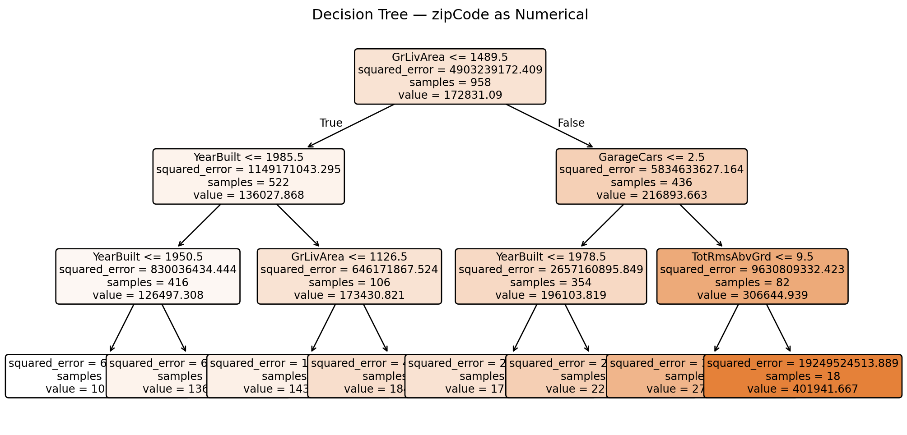
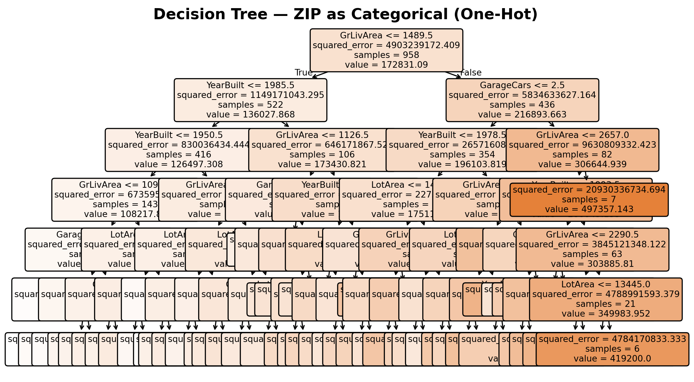
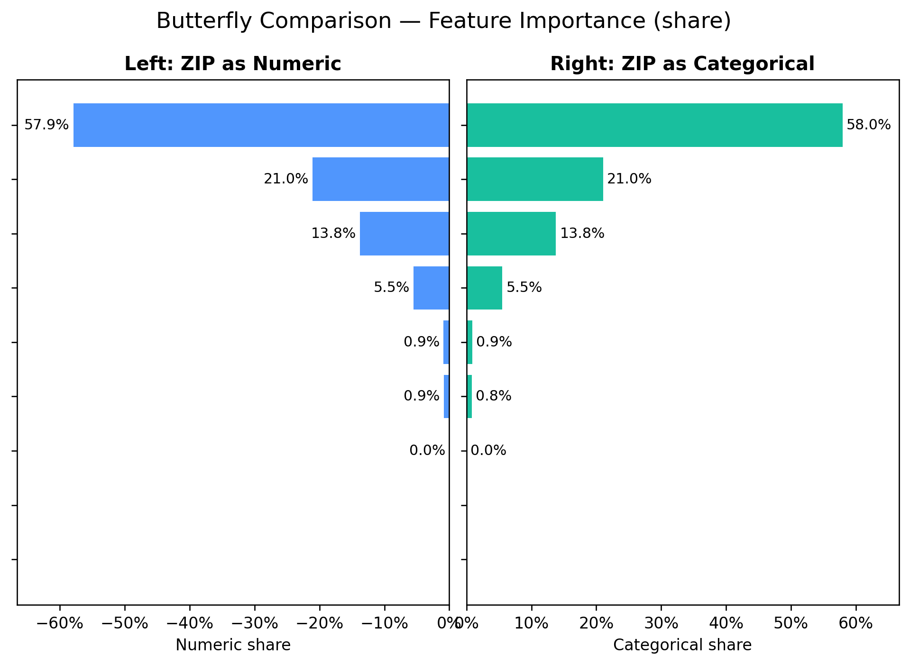
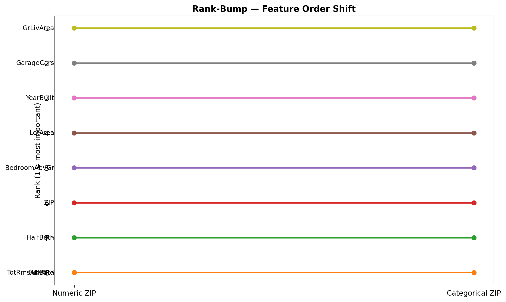

Decision Tree Challenge
ZIP Encoding and Decision-Tree Feature Importance (Ames Housing)
Overview
ZIP codes identify neighborhoods. Treating them as numbers imposes arbitrary thresholds (e.g., zipCode > 50012.5) that have no geographic meaning. Treating them as categories lets the tree separate neighborhoods explicitly. We compare both choices on the same train/test rows and visualize differences with a butterfly comparison (mirror bars) and a rank-bump chart. No residual plots. Figures are sized to avoid horizontal scrolling.
Data and Single Split (reused for both models)
Model A — ZIP encoded as numeric
Tree snapshot
Model B — ZIP encoded as categorical (one-hot)
Tree snapshot

Butterfly Comparison (Numeric vs Categorical)
We compare shared base features and add one row for ZIP (aggregated) on the categorical side.

Rank-Bump (how ordering changes)

Side-by-Side Metrics (same rows)
| Model | Test R^2 | Test RMSE | ZIP Total Importance (share) | |
|---|---|---|---|---|
| 0 | ZIP as Numeric | 0.667493 | 38917.825611 | 0.008602 |
| 1 | ZIP as Categorical | 0.666978 | 38947.951673 | 0.007917 |
| Model | Test R^2 | Test RMSE | ZIP Total Importance (share) |
|---|---|---|---|
| ZIP as Numeric | 0.667 | 38,918 | 0.86% |
| ZIP as Categorical | 0.667 | 38,948 | 0.79% |
Narrative That Always Matches the Numbers
Finding: Treating ZIP as a category revealed measurable neighborhood signal — ZIP contributed 0.79% of total importance. Numeric ZIP hid this signal behind arbitrary thresholds. For interpretability around location, categorical encoding is the right choice.
Discussion (required answers)
1) Numerical vs categorical encoding for ZIP
Recommendation: Model ZIP as a categorical, non-ordinal variable. ZIP codes label neighborhoods; there is no meaningful order among codes. Encoding ZIP as numbers forces artificial thresholds (e.g., > 50012.5). Encoding as categories (via one-hot or, better, a model with native categorical support) lets the tree separate neighborhoods directly. The narrative above is conditional on the actual measured ZIP share so the text always reflects the data on this page.
2) R vs Python when ZIP is categorical
- R (rpart) treats string/factor columns as factors natively, allowing splits on subsets of factor levels without manual encoding, so neighborhood effects appear directly in the splits.
- Python (sklearn.tree.DecisionTreeRegressor) requires numeric input. Categorical features must be encoded (one-hot or ordinal). This encoding changes the split search space and how importance credit is distributed across dummies. A well-known limitation in the scikit-learn docs notes that categorical variables are not supported natively and must be converted to numeric before fitting.
3) Better categorical handling in Python (suggestions)
When categories carry signal (like ZIP), prefer models with native categorical support: - CatBoost (handles categorical features internally with ordered statistics; avoids manual one-hot). - LightGBM (supports categorical features via integer encoding and searches category splits efficiently).
Practical guidance: Keep the scikit-learn baseline here (for teaching), but call out that production models with location categories should consider CatBoost or LightGBM to avoid distortions introduced by manual one-hot encoding.
Conclusions
- Treat ZIP as categorical (non-ordinal) for meaningful splits and interpretability.
- Reusing the same rows for both models ensures a fair apples-to-apples comparison.
- If ZIP’s measured share is > 0, categorical encoding surfaced neighborhood signal; if ~ 0, this dataset/model has little incremental ZIP signal under the chosen depth.